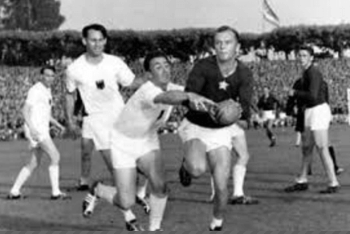
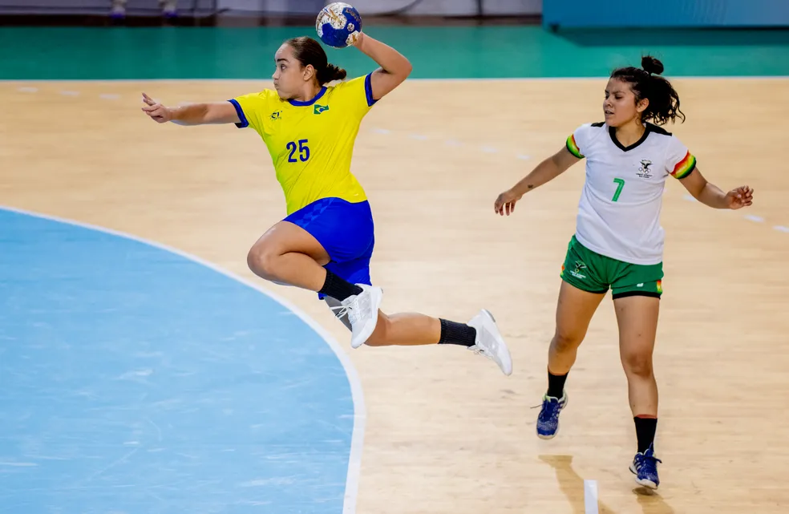
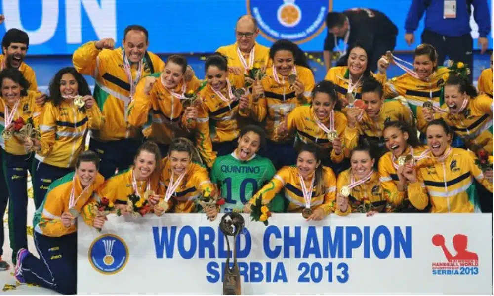

Handebol no Brasil: de origem militar alemã a potência mundial
Como um esporte criado na Alemanha se tornou uma das modalidades mais praticadas do país
Gustavo Munduruca—
São Paulo
A Origem do Handebol
O handebol tem uma origem europeia bem interessante e militar. Ele nasceu no início do século XX, por volta de 1919, na Alemanha, criado pelo professor Karl Schelenz a partir de jogos de rua semelhantes. No começo, era jogado em campos de grama com equipes de 11 jogadores, inspirado no futebol, mas com as mãos. Com o tempo, o esporte migrou para as quadras fechadas, reduzindo o número de atletas para 7 por time, o que deixou o jogo muito mais rápido e dinâmico. No Brasil, a modalidade chegou na década de 1930, difundida por imigrantes alemães, e hoje é um esporte extremamente popular em escolas, universidades e clubes de todo o país.

Origem do handebol na Alemanha.
Como o Handebol funciona?
Embora pareça uma mistura de basquete com futebol na quadra, o handebol tem dinâmicas bem próprias. O objetivo é simples: marcar gols arremessando a bola na baliza adversária. Cada equipe conta com 6 jogadores de linha e 1 goleiro. Quem está com a bola pode dar até três passos sem quicá-la e segurá-la por no máximo três segundos antes de passar, chutar ou driblar. Uma regra fundamental é que os jogadores de linha não podem pisar na "área do goleiro" (aquela meia-lua em frente ao gol), e as partidas são divididas em dois tempos de 30 minutos.

Partida oficial de handebol.
O Brasil no cenário
O Brasil tem uma história de muito respeito e conquistas no cenário internacional de handebol, impulsionado pelo trabalho da Confederação Brasileira de Handebol (CBHB) e por ligas nacionais que revelam grandes talentos. A grande coroação dessa força veio em 2013, quando a seleção feminina de handebol fez história ao conquistar o inédito título de Campeã Mundial na Sérvia.

Seleção brasileira de handebol.
Quando o assunto são os craques que marcaram a modalidade, é impossível não destacar Alexandra do Nascimento (a "Alê"), eleita a melhor jogadora do mundo em 2012 e grande estrela daquela geração dourada, além de nomes fantásticos como Eduarda Amorim (Duda) e, no masculino, o talentoso pivô Thiagus Petrus, que brilha nos principais clubes da Europa e comanda a nossa seleção.
A Importância na Vida dos Atletas
Praticar handebol é excelente para a saúde física e mental. Por ser um esporte de altíssima intensidade, ele desenvolve a resistência cardiovascular, melhora a força explosiva, a agilidade e a coordenação motora. Como exige passes rápidos e muita leitura tática em equipe, ele também fortalece a comunicação e a união entre os colegas. Valorizar o handebol é apoiar uma modalidade vibrante que transforma vidas e revela grandes talentos pelo Brasil afora.